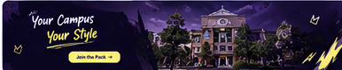

More Than Merchandise, We're a Campus Movement.
WOLVY lahir dari keresahan mahasiswa yang bosan dengan merchandise almamater konvensional yang kaku. Kami memadukan kebanggaan kampus dengan estetika streetwear kontemporer dan inovasi Computer Vision.
Dari Ruang BEM Hingga Jadi Tren Gaya Hidup Kampus
Dimulai pada tahun 2024 dari obrolan santai di sekretariat mahasiswa, WOLVY bertekad mendefinisikan ulang makna jaket varsity dan kaos fakultas. Almamater bukan sekadar lambang formal, melainkan simbol persaudaraan, perjuangan ujian, dan kenangan masa kuliah.
Setiap produk kami diproduksi dengan bahan katun combed terbaik, jahitan rantai standar distro, serta sablon dan bordir berkualitas tinggi yang tahan bertahun-tahun bahkan setelah lulus.
Jelajahi Koleksi Merchandise
Campus Pride & Identity
Menghidupkan simbol serigala sebagai lambang ketangguhan, loyalitas kawanan, dan semangat pantang menyerah mahasiswa dalam mengejar impian.
Streetwear Cutting-Edge
Potongan regular oversized modern, warna palet ungu gelap yang berkarakter, dan aksen neon kuning yang stand out di lorong kampus.
Interactive Technology
Dilengkapi teknologi Virtual Try-On berbasis Computer Vision dan studio desain interaktif agar kamu bisa melihat penampilanmu sebelum membeli.